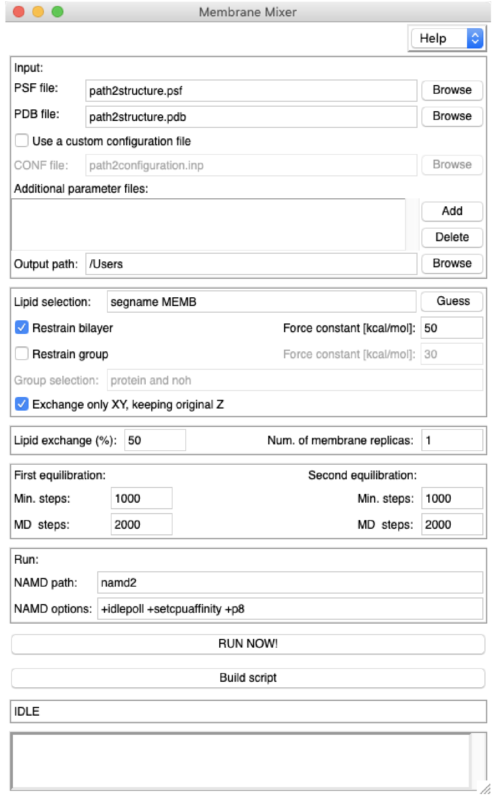

Membrane Mixer provides a rapid way to generate multiple membranes by shuffling lipids.
The resulting membranes are essentially identical to the original membrane in terms of
chemico-physical properties.
During the execution of the plugin and for each new replica, two NAMD equilibrations are automatically run with a
grid-force potential applied to specific lipids in the membrane. This external potential has the task to reduce
clashes introduced during the shuffling process, and it is reduced to zero
during the second equilibration.
Opening Membrane Mixer
Membrane Mixer is located in VMD Extensions ⟶ Modeling ⟶ Membrane Mixer.
The Graphical User Interface
For most of the cases, the user will need to provide only a PSF and PDB file of the original membrane.
The system can contain any other molecule (e.g. water, ions, proteins) as long as additional parameter files are provided
if not already present in the standard CHARMM force field.
Below are descriptions of GUI sections and options.
Input files
PSF file: select the .psf file containing the topology of the original membrane.
PDB file: select the .pdb file containing the coordinate of the original membrane.
A configuration file to run NAMD is automatically generated by the plugin that should work
with most of the systems. In case the user wants to use a custom configuration file,
this can be done by selecting the "Use a custom configuration file" box and choosing the appropriate
CONF file for the system.
CONF file: provide a custom configuration file that can run NAMD with the selected structure.
The Additional parameter files box allows the user to add parameter files which are not included
in the custom or default configuration file (e.g. for a specific molecule that is not included in the standard
CHARMM force field).
Additional parameter files: these additional parameter files will be included in the parameter section
of the NAMD configuration file (default or custom).
Output path: select the master folder where all replicas and related files will be placed. If the folder does not exist,
it will be created. The plugin works by initially running all simulations relative to a replica in this
directory and then moving all the files related to the current replica to a specific folder within the master directory.
All files and folders generated by the plugin have a "MMP" prefix.
Selection of lipids and restraints
Lipid selection: shuffling lipids are chosen from this selection (default "segname MEMB").
The Guess button attempts retrieving this information automatically from selected PSF and PDB files.
Restrain bilayer: due to the application of an external potential on shuffling lipids during the MD simulations,
the two leaflets must be restrained to their initial positions, otherwise they might separate. This option applies a Colvar restraint
on the center of mass of phosphate atoms in each leaflet. If cholesterol molecules are present,
an additional Colvar restraint is applied on the average center of mass of their oxygen atoms.
If a custom configuration file is provided, any other Colvar directive in the file will be ignored. If the custom
configuration file contains already bilayer restraints, the user may want to deselect this option.
Restrain group: additional groups can be restrained during NAMD equilibrations. This is especially
necessary if a protein is included in the membrane, since the plugin protocol might cause large
conformational changes in the protein. Therefore, it is highly advised to use this option in such a case.
The option allows to choose the atom selection and force constant.
Exchange only XY, keeping original Z: by default, the shuffling algorithmt exchanges only the center of mass X and Y coordinates
of the shuffling pairs, keeping the Z unmodified. This avoids that lipids are moved too deep into or even outside the membrane.
Deselecting this option will use full center of mass during the shuffling procedure.
Replica-specific settings
Lipid exchange (%): this percentage indicates the amount of lipids specified in Lipid selection that
will be shuffled. It is not advisable and necessary to exchange 100% of lipids, as this might cause unstability
in the systems that cannot be easily solved. Values between 50-80% show reasonable results in terms of change
of lipid configuration and membrane stability.
Num. of membrane replicas: this option specifies how many replicas will be automatically and serially generated by the plugin.
Simulation settings
First equilibration: specify the number of minimization steps (Min. steps, default 1000) and MD steps (MD steps, default 2000)
to run in the first equilibration. The time step in the default configuration file is 1.0 fs, therefore
only 2 ps of MD simulation will be run in the first equilibration with default settings.
Second equilibration: specify the number of minimization steps (Min. steps, default 1000) and MD steps (MD steps, default 2000)
to run in the second equilibration (after lipid shuffling procedure).
The second equilibration is 6 times longer than what specified in MD steps. Inf fact, at every MD steps
the grid-force potential is decreased till zero. The last 2*MD steps run conventional MD without an external
potential.
The time step in the default configuration file is 1.0 fs, therefore
a total of 12 ps of MD simulation will be run in the second equilibration with default settings.
NAMD settings
NAMD path: specify the absolute path to NAMD executable.
NAMD options: according to your workstation, you may need to modify these options to maximize
NAMD simulation speed and compatibility.
Ready to run
RUN NOW!: the plugin will be excecuted immediately in the current VMD session, running automatically all necessary NAMD simulations.
Build script: the plugin generates a TCL script that can be run in any other machine with VMD and NAMD installed. The
TCL script can be executed in VMD text mode, e.g. vmd -dispdev text -e "MMP.RunScript.tcl"
The empty box below the running buttons visualize some details about the status and progress of the plugin.
A file called "MMP.PROGRESS.txt" provides more information on the progress of the plugin.
Caveats and limitations
Membrane Mixer is only compatible with flat membranes and nanodiscs.
Remember alway to double-check if the final generated membrane looks fine. The plugin fixes ring piercings but it cannot detect if there are
lipid tails crossing over protein loops. Please check if you have such a case and just discard that specific replica.
The Cispeptide plugin is used to check if there are cis peptide bonds in protein structure at the end of the plugin protocol. However, if the
protein is not wrapped into the simulation cell and some bonds are stretched over the periodic boundary conditions, the the plugin
might detect such stretched bonds as cis, even if they are trans. Moreover, few cis peptide bonds are naturally occuring, like in some proline.
The user should check if this is the case with their protein.
If separation between the two membrane leaflets is observed even after restraining the bilayer, increase the value for the restraint force constant.
Larger membranes may need higher values for the force constant to keep the two leaflets in place.
Citation
If you use membranes generated using Membrane Mixer, please cite:
G. Licari, S. Dehghani-Ghahnaviyeh, E. Tajkhorshid, in preparation.
Authors
- Giuseppe Licari, Theoretical and Computational Biophysics Group,
University of Illinois at Urbana-Champaign
- Sepehr Dehghani-Ghahnaviyeh, Theoretical and Computational Biophysics Group,
University of Illinois at Urbana-Champaign